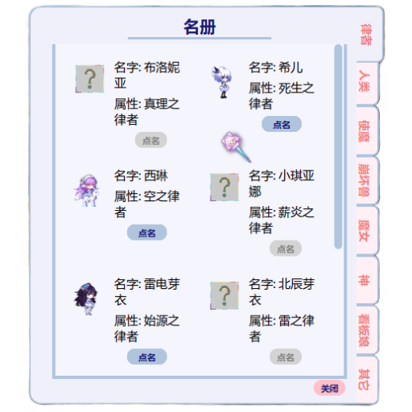
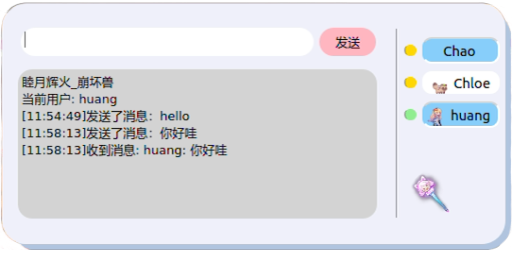
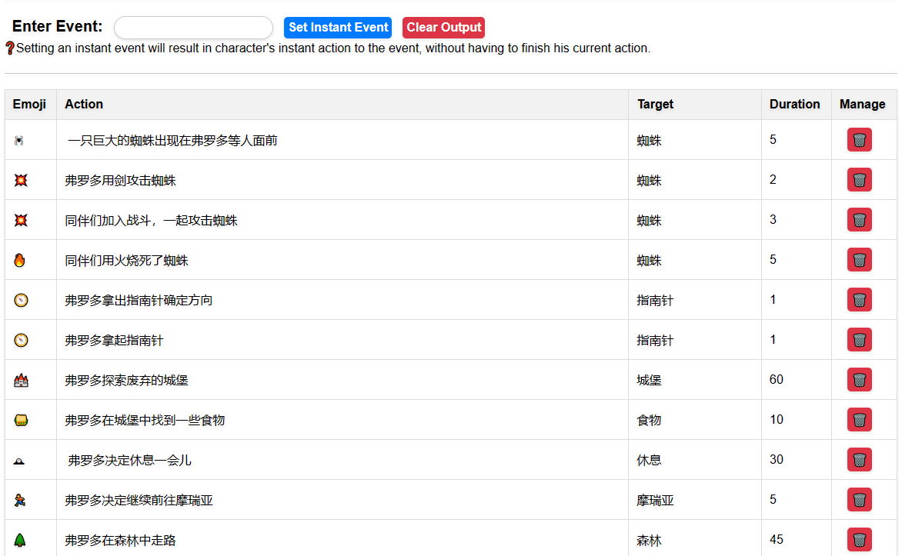
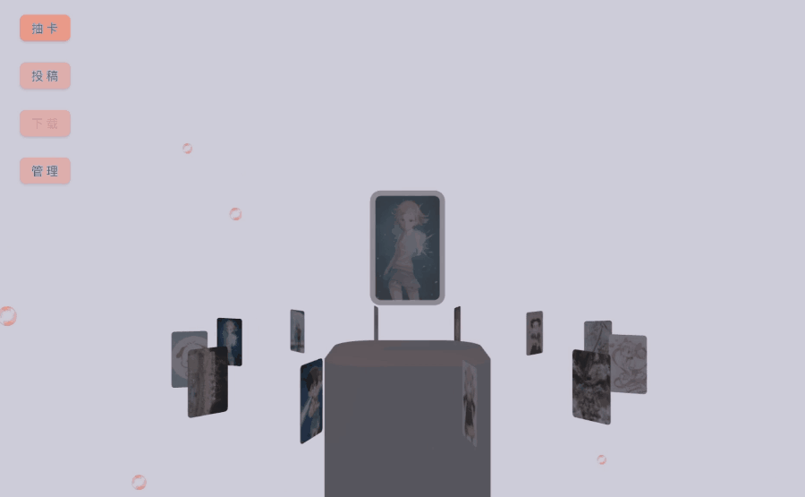
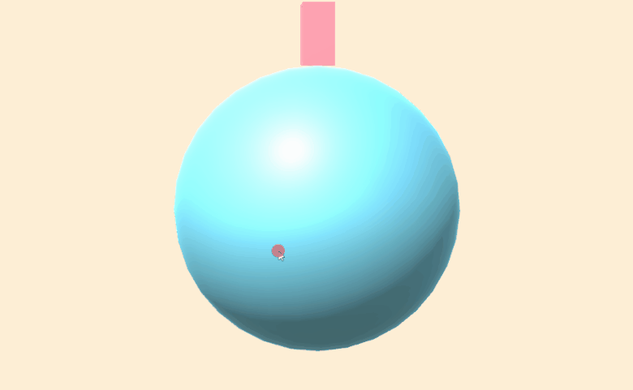
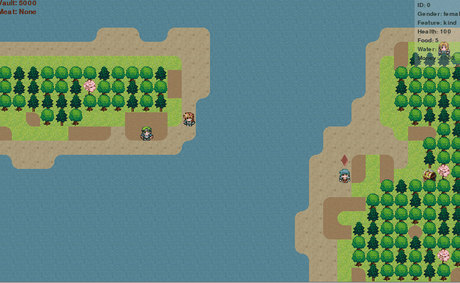

远程多人聊天工具
ChatGPT自动故事生成器
网页端照片上传抽卡器
可视化ubuntu grep工具
基于Unity的3d动画
基于pygame的2d随机地图
桌宠显示

右键菜单
收到消息
切换人物
发送消息

PyQt实现桌宠动画更新和聊天界面显示，基于TCP socket的服务器与客户端网络通信（自动检查下载更新，在线状态同步，多人消息收发，文件下载）

基于python flask的服务器端https web服务, 基于ChatGPT自动生成故事（用户影响故事走向）

多用户上传照片，管理照片，抽取和查看照片池及照片简介

基于pygtk实现ubuntu grep GUI: 可同时进行多个选项卡，选择查询文件夹，指定文件名正则表达式，需要忽略的匹配表达式，指定是否区分大小写，高亮结果中的匹配表达式等。

基于unity实现随机生成人物，在球面上自由移动和自动寻路

基于pygame的2d随机地图生成，自动化人物需求，自动寻路